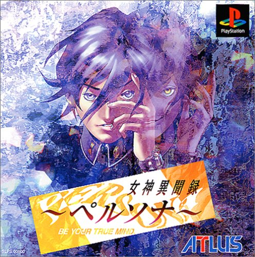

女神異聞録ペルソナ
『女神異聞録ペルソナ』（めがみいぶんろくペルソナ）は、
1996年9月20日に発売されたPlayStation (PS) 用RPG。PS初の真・女神転生グループの作品であり、
ペルソナシリーズの第1作でもある。また、1999年3月25日にはWindows機にも移植され、
後に廉価版がデジキューブから販売されている。
『Revelations: Persona』の名称で海外向けに移植されており、
キャラクターデザイン及び人物名などが異なっている。
「"女神異聞録ペルソナ"」
『フリー百科事典 ウィキペディア日本語版』より。